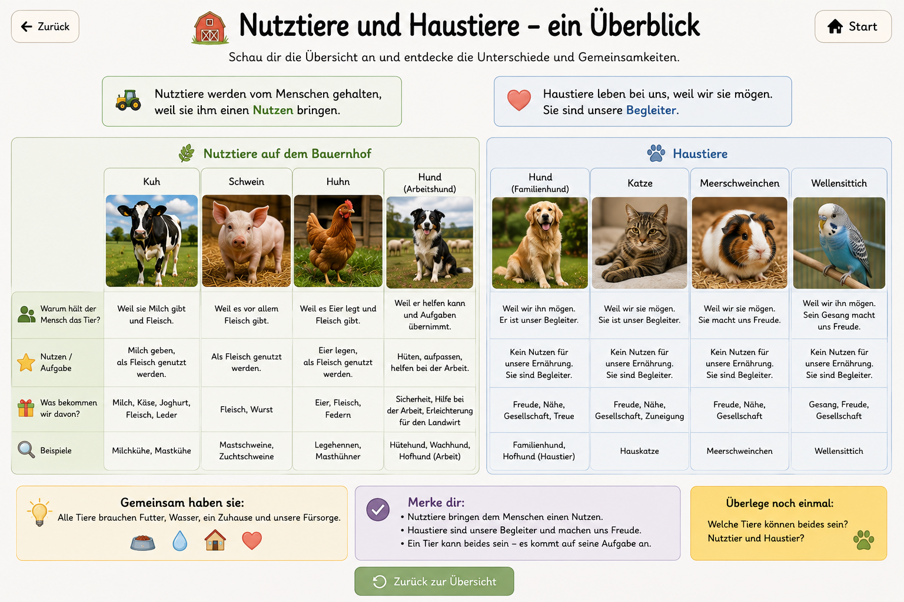

Warum hält der Mensch Tiere?
Vier Fälle zum Entdecken, Vermuten und Begründen
Warum lebt die Kuh auf dem Bauernhof?
Überlegt zuerst gemeinsam: Warum lebt die Kuh auf dem Bauernhof? Was haben Menschen davon?
Milchproduktion
Fleischproduktion
Was haben beide Wege gemeinsam?
Die Tiere werden gehalten, weil Menschen daraus Lebensmittel gewinnen. Ein Tier kann also auf unterschiedliche Weise genutzt werden.
Lehrerhinweis: Die Milch- und Fleischproduktion stehen bewusst gleichberechtigt nebeneinander. Zuerst Vermutungen sammeln, dann die Bilder schrittweise aufdecken. Bei der Stall-/Weidefrage kann zusätzlich thematisiert werden, dass Haltungsformen unterschiedlich sind.
Warum lebt das Schwein auf dem Bauernhof?
Sammelt zuerst eure Vermutungen: Wozu halten Menschen Schweine? Was kann später aus ihnen werden?
Schweine auf dem Bauernhof
Was zeigt uns dieser Weg?
Schweine werden vor allem gehalten, damit Menschen daraus Lebensmittel gewinnen können.
Lehrerhinweis: Beim Schwein gibt es im Vergleich zur Kuh keinen zweiten gleichwertigen Nutzungsweg. Der Schwerpunkt liegt auf der Gewinnung von Lebensmitteln. Die Kinder sollen den Weg aber zuerst selbst vermuten.
Warum lebt das Huhn auf dem Bauernhof?
Was glaubt ihr? Wozu halten Menschen Hühner?
Was haben wir herausgefunden?
Hühner werden aus unterschiedlichen Gründen gehalten: für Eier oder für Fleisch. Auch ihre Haltung kann unterschiedlich aussehen.
Lehrerhinweis: Nach der offenen Frage werden die beiden Nutzungswege sichtbar. Innerhalb eines gewählten Weges bleiben alle Schritte auf derselben Seite und werden mit dem linken Button nacheinander aufgedeckt.
Braucht ein Bauernhof heute noch einen Hund?
Welche Aufgaben könnte ein Hund auf dem Bauernhof haben? Oder ist er manchmal einfach nur ein Familienhund?
Der Hund auf dem Bauernhof
Was zeigt uns der Hund?
Ein Hund auf dem Bauernhof kann ganz unterschiedlich leben: als Haustier der Familie, als Hofhund oder auch als Arbeitshund, zum Beispiel beim Hüten von Schafen.
Lehrerhinweis: Der Hund ist bewusst ein Grenzfall. Anders als Kuh, Schwein und Huhn liefert er meist keine Lebensmittel. Die Kinder sollen entdecken, dass er auf dem Hof eher Begleiter, Wachhund oder Arbeitshund sein kann.
Nutztiere und Haustiere – ein Überblick
